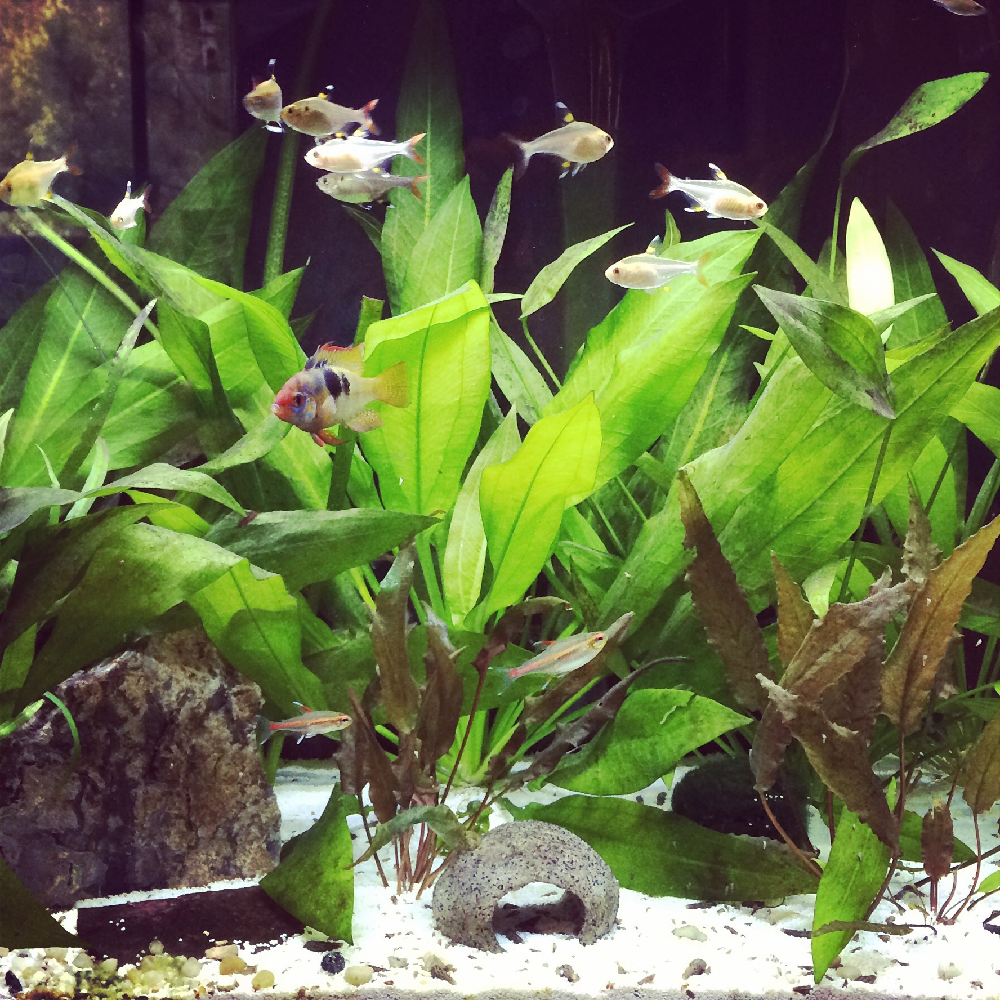
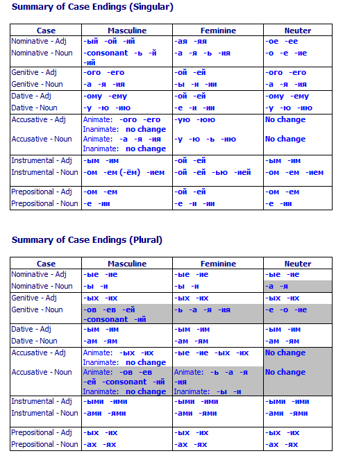

<img class="big" src="humorimg/wolfpuns.jpg"> --- ### The Midterm * You'll walk in, sit down, and begin the test * 40 Scantron-based Multiple Choice questions, 1 short answer, one long answer * Plan to write 1/2 page (or less) for the long answer * You'll have until 11:54 to complete the exam * ***Bring a Number 2 pencil!*** * If you miss the exam, you've either got a doctor's note or a zero --- # Your Friend! <img class="big" src="img/pencil.jpg"> --- ### Things you will need to do * Match languages to families * Match features to language families * Understand linguistic concepts * Analyze a very basic dataset * ***Bring a Number 2 pencil!*** --- ### Things you will *not* need to do * Repeat language-specific details * No "What is the Ergative case marker in Nepali?" * Remember how many people speak a given language * Remember sub-families outside of Indo-European --- ### The Long Answer * Plan on half a page maximum. * Concise and complete answers are very possible to some of the questions. * Remember, you're showing your knowledge of the material, not trying to sell me anything. * Please skip the "Fusional Morphology is a really important part of language, and is perhaps the greatest phenomenon ever..." niceties :) * You've had the questions for almost two weeks. Make sure your thoughts are in order *before* you come in. --- ### Multiple Choice Tips * Eliminate the obviously wrong answers first * I can't resist the occasional joke answer. It'll usually be "E". * If you don't have the answer, circle the contenders on your test sheet and come back. * *Choose the **best** answer* --- ### Let's talk about that --- ### Which of the below features is *not* commonly associated with Caucasian languages? a. Agglutinative Morphology b. Ejective consonants c. Scarcity of vowels d. Ergative/Absolutive Case Systems e. Templatic Morphology --- ### All rules have exceptions * Ewe has no Noun Classes, but Niger-Congo usually does * English has no grammatical gender, but Germanic usually does. * Chechen and Ingush have a bunch of vowels, but Caucasian languages usually don't. * (There's vowel-sparseness in many widely-spoken NE Caucasian languages (e.g. Lezgin, Avar, Lak)) * **Few of these generalizations about families are *always* true.** --- ### "Only the Sith deal in Absolutes!" <img class="big" src="humorimg/obiwan.jpg"> --- ### ... but we don't even *need* to worry about these exceptions --- ### Which of the below features is *not* commonly associated with Caucasian languages? a. Agglutinative Morphology b. Ejective consonants c. Scarcity of vowels d. Ergative/Absolutive Case Systems e. Templatic Morphology --- ### Which of the below features is *not* commonly associated with Caucasian languages? a. Agglutinative Morphology b. Ejective consonants c. Scarcity of vowels d. Ergative/Absolutive Case Systems <correct>e. Templatic Morphology</correct> --- Even if "Scarcity of vowels" has some exceptions, "Templatic morphology" is not remotely associated with Caucasian. --- "Scarcity of vowels" is not the answer you're looking for. <img class="big" src="humorimg/mindtrick.jpg"> --- ### On exams, as in life, choose the best answer. * We try to always give one *great* answer, even if some of the others seem iffy. * ... and if you think there really are two very right answers, please do ask (tactfully)! --- ## Any Midterm questions? --- # Oh English, you so crazy ### LING 1020 - Will Styler --- ### *"Why can't these immigrants just learn English?!?"* * <img class="big" src="humorimg/murica.png"> --- ## "Uh, have you looked at English lately??" --- ### Nearly every part of this language is completely bizarre. * Non-Native Speakers: You know the deal. --- Let's look at this from an outsider's perspective --- <lang>???</lang><br><ldata>???:??? - ???</ldata> <iframe data-autoplay width="840" height="690" src="http://www.youtube.com/embed/FcUi6UEQh00?start=30"></iframe> Adriano Celetano - Prisencolinensinainciusol --- ## The Sound System --- ### /ɹ/eally? * Very few languages use /ɹ/ * Mandarin Chinese shares this crazy * We've got a bunch of ways to make it --- ### /ð/ and /θ/ * Interdental sounds are fairly rare, too * They're considered rude in many cultures --- ### Our vowel system --- * / i, ɪ, e, ɛ, æ, ə, ʌ, ɑ, ɔ, ʊ, u / * /aj, oj, ej, ow, aw/ * Few languages have us beat * (Rub it in, Danish) --- ### Date vs. Debt --- # Date <audio data-autoplay src="phonmedia/date1.mp3"></audio> --- # Debt <audio data-autoplay src="phonmedia/date12.mp3"></audio> --- ## ? <audio data-autoplay src="phonmedia/date4.mp3"></audio> --- ## ?? <audio data-autoplay src="phonmedia/date8.mp3"></audio> --- ## ??? <audio data-autoplay src="phonmedia/date6.mp3"></audio> --- ### Let's do an experiment! --- ## ???? <audio data-autoplay src="phonmedia/date_debt_11_steps.mp3"></audio> --- ### So yeah, our vowel system is crazy --- All of this crazy is concealed by... --- ## The Writing System --- <img src="phonmedia/aeiou.png"> --- # Ghoti <img class="big" src="img/fish_dieter.jpg"> --- ### Ghoti * "gh" from "rough" * "o" from "women" * "ti" from "action" * Pronounced like "Fish" --- ## Knight <img class="big" src="humorimg/blackknight.jpg"> --- Then, we use these sounds to do silly things in the rest of the language --- ## Prepositions --- I've got a conference [at/in] Hellems * \*I've got a conference at Indiana * ?I've got a conference at Indianapolis * I've got a conference at the Marriott in Indianapolis --- ### WTF? --- I've got a meeting on Friday * I've got a meeting in August * I've got a meeting at 3pm * I've got a meeting during lunch * I've got a meeting ø next week --- ### Am I getting my point to/through/by/across to you? * I'm no good at/when/for explaining these things in/at/through lectures. --- ## Plurality --- Fish. <img class="big" src="img/fish_dieter.jpg"> --- Fish. <img class="big" src="img/fish_jonydieter.jpg"> --- Fishes.  --- Leaf -> Leaves * Wife -> Wives * Staff -> ?? --- <section data-background="img/clickerbkgrnd.png"></section> ### The plural of "staff" is... a) Staffs (rhymes with "graphs") b) Staffs (rhymes with "calves") c) Staves (rhyme with "caves") d) Stife (because English.) --- ### Staffs <center> <table> <tr> <th><img height="1000" src="lotwimg/staff.jpg"></th> <th><img height="1000" src="lotwimg/staff.jpg"></th> </tr> </table> </center> --- ### Staves <img class="big" src="lotwimg/tenofwands.jpg"> --- Mouse -> Mice * Louse -> Lice * House -> Hice, right? * Spouse -> ... --- ### Polygamy adds spice to life! * <img class="big" src="humorimg/badpundog.jpg"> --- * (This is a language joke, not a political statement) --- ### Count vs. Mass nouns * I have a car * This is a "count noun" * \*I have a sand. * This is a "mass noun" * \* I ate an asparagus * I ate a french fry * --- ### Count nouns can be treated like mass nouns * I saw a raccoon on the road * I saw some raccoons on the road * I saw some raccoon on the road --- <img class="big" src="humorimg/escalatedquickly.jpg"> --- Speaking of dead animals... --- ## I have cow with English --- ### What'd you have for dinner? * ?I had cow. * Needs to be "beef" * ?I had pig. * "Pork" * ?I had deer * "Venison" * I had chicken. * I had lamb --- ### Animals are count nouns, foods are mass nouns * I hugged three pigs, \*I ate three porks * I bought some cows, I bought some beef --- (Yet, Will has several beefs with Michael Bay) * Beeves? --- ## Affixes --- ### English has lots of prefixes and suffixes * i- * As in "iPhone", "iPad", "iMac", "iDock", "iBrator" * -sauce * As in "sadsauce", "awesomesauce", ?"concisesauce", ?"pedanticsauce" * -holic/-holism * As in "alcoholic", "chocoholic", "workaholic", "enchiladaholism", ?"phonologoholic" --- ### ... but it has exactly one infix --- ### Infix A affix which is inserted into the middle of the word --- Will I tell you what it is? * ### Abso-fucking-lutely --- ### "Fucking" is the only infix in the English language * ... and it has very strict rules where it can go --- <section data-background="img/clickerbkgrnd.png"></section> ### Add a -fucking- infix to the word "constitutional" a) Cons-fucking-titutional b) Consti-fucking-tutional c) Constitu-fucking-tional d) Constitution-fucking-al --- ### *Expletives must occur immediately prior to the stressed syllable* * "Missi-fucking-sippi" * *Miss-fucking-isippi * "He's a deon-fucking-tologist" * "Antidisestablishmen-fucking-tarianism" --- It's about time we learned the rule for that! --- ## It --- It ate my homework * It's getting hot in here * It burns when I eat Habañeros * It sucks when Michael Bay remakes your childhood favorites * It's about time we fix our writing system --- ### Shouldn't we do something about that? * Which means the same thing as "Should we do something about that?" * Go home English, you're drunk. * (Shouldn't that be "drinked")? --- ### I give up * Speaking of which... --- ## Verb particle constructions --- ### Verb Particle Constructions When a verb has a different meaning when coupled with a particular preposition or particle --- ### Cut - to slice * Cut in - To offer somebody a part of a venture * Cut out - To stop something, or remove somebody from a venture, or lose audio * Cut with - To adulterate a drug * Cut off - To cease financial support, or merge leaving too little space * ... or remove a smaller part than the whole * Cut it - To suffice for a task --- ### Cut continued * Cut up - To slice into small pieces * Cut down - To shorten something * Cut across/through - To shorten one's route by traversing an open space * Cut on - To repeatedly make small cutting strokes at the periphery of an object * Cut back - To reduce an existing option or investment, travel back in story --- Sometimes, we don't know if we want the verb particle construction, or the preposition! --- ### *Cut up the center of the fabric* <img class="big" src="lotwimg/cutup1.png"> --- ### *Cut up the center of the fabric* <img class="big" src="lotwimg/cutup2.png"> --- ### These differences can have major consequences --- ### "Jackie stole my lunchbox..." * "... then she threw my lunch up on the roof" * "... then she threw up my lunch on the roof" --- ### Then there's the really crazy stuff --- *Buffalo buffalo Buffalo buffalo buffalo buffalo Buffalo buffalo.* * This is a fully grammatical sentence * Buffalo NY, Buffalo (the animal), and the verb "buffalo" (to bully) * "New York bison whom other New York bison bully, themselves bully New York bison". --- <img class="big" src="humorimg/surprisedbuffalo.jpg"> --- ## It's not just English! --- ### English happens to be absolutely insane * It's filled with irregularities, weirdnesses, odd constructions, and other silliness * *... but that's no different than any other language.* --- ## All languages are crazy! * We're simplifying languages left and right for this class * Partly because we don't have the time * ... and because if we didn't, you'd run screaming --- ### The Real Russian Case System  --- ### Spanish Verbal Hell <img class="big" src="lotwimg/spanishverbs.jpg"> --- ### ... and that craziness is why linguists love language so much! --- ### Wrapping up * English is bat-poop cray-cray, in so many ways * (Partly because you understood that sentence) * ... but so is every other language * That's why we love them * Second language learners are fighting an uphill battle. Be kind! --- ## In Recitation: Exam Review - Part 2! --- ## Next time: The Joy (??) of Fieldwork with Sam Beer <correct>No reading.</correct> --- <huge>Thank you!</huge>